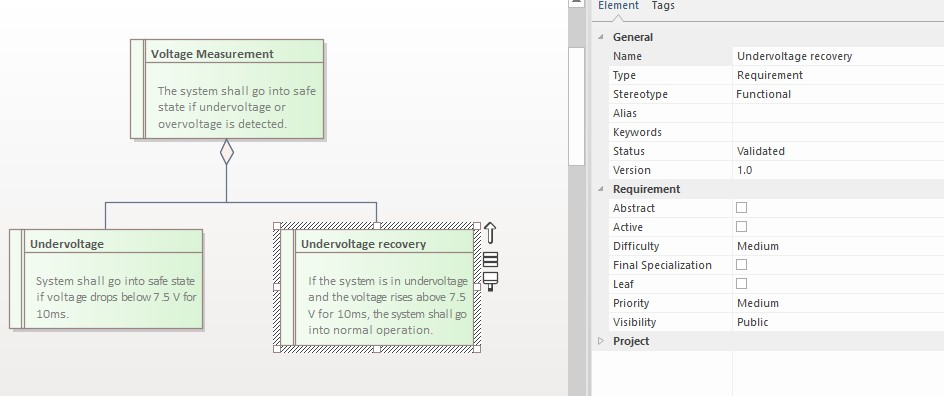
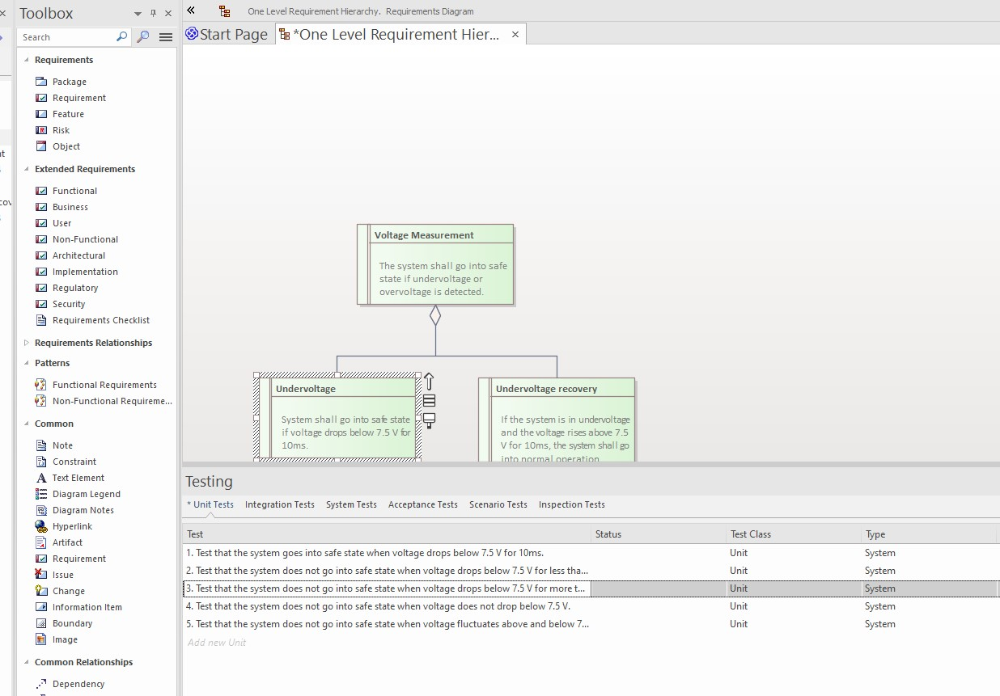

Python script that takes a requirement, sends it to Chat GPT and fills in the testcases returned by ChatGPT.
API_KEY in req_to_testcase_gpt.py. Mine is there, if you don't have one yet... so please don't spam it :)chat_gpt function with the model and temperature parameters to see what you obtain...pip install -r requirements.txt in the script folder)Open EA.
Select a requirement with the mouse. The element must be of "Requirement" type

Run the script by calling:
python req_to_testcase_gpt.py
Or run it in your favourite IDE (I use Visual Studio Code)
After FINISHED! is displayed in terminal, check the EA Requirements to see the testcases:
